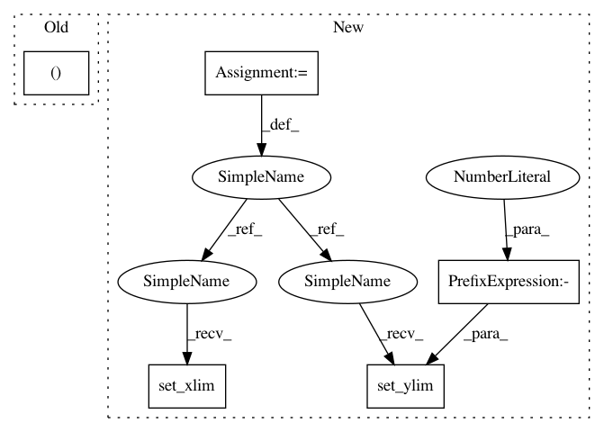

d67550cee52588a9ff3cff49fbc45b0d878bca9a,lib/matplotlib/tests/test_patches.py,,test_large_arc,#,496
Before Change
ax = plt.figure().add_subplot()
ax.set_axis_off()
// A large arc that crosses the axes view limits.
ax.add_patch(mpatches.Arc((-100, 0), 201, 201))
After Change
ax1.set_ylim(5, 6)
// force the low accuracy case
ax2.set_xlim(-25000, 18000)
ax2.set_ylim(-20000, 6600)
@image_comparison(["all_quadrants_arcs.svg"], style="mpl20")
def test_rotated_arcs():
In pattern: SUPERPATTERN
Frequency: 3
Non-data size: 5
Instances
Project Name: matplotlib/matplotlib
Commit Name: d67550cee52588a9ff3cff49fbc45b0d878bca9a
Time: 2020-06-16
Author: tcaswell@gmail.com
File Name: lib/matplotlib/tests/test_patches.py
Class Name:
Method Name: test_large_arc
Project Name: matplotlib/matplotlib
Commit Name: 98ab2a07920610dae862d95363243572a84ea2c7
Time: 2020-06-16
Author: tcaswell@gmail.com
File Name: lib/matplotlib/tests/test_patches.py
Class Name:
Method Name: test_large_arc
Project Name: matplotlib/matplotlib
Commit Name: 4aca98f18ed28d0b9e8dda5832b45ac33a61f44e
Time: 2017-06-09
Author: tcaswell@gmail.com
File Name: examples/event_handling/pipong.py
Class Name: Game
Method Name: __init__